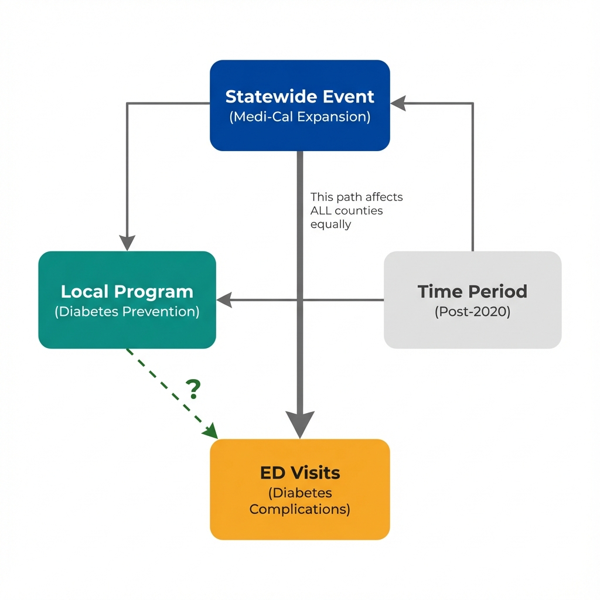

The Data
A county launched a diabetes prevention program in January 2020. Emergency department visits for diabetes complications dropped 18% afterward. Success? Or did something else change? (Data are simulated for illustration.)
ED Visits per 10,000 Residents Over Time
Next: If both counties improved similarly, and only one had the program, what does that tell us about what actually caused the improvement?
The Problem
When something else changes at the same time as your program, any improvement you observe might have nothing to do with your intervention.
What Is the History Threat?
A history threat occurs when external events happen at the same time as your intervention and affect outcomes. Common culprits include:
- State or federal policy changes (new regulations, funding shifts)
- Economic shifts (recession, stimulus payments, job market changes)
- Other programs launching in the same period
- Seasonal patterns (flu season, holiday effects)
- Major public health events (pandemics, environmental disasters)
How Concurrent Events Create Bias

The statewide event affects outcomes in both program and comparison counties. Without accounting for this, we would wrongly attribute all improvement to the local program.
The Core Problem
Programs often launch during favorable conditions. Counties start new initiatives when they receive new funding, when leadership changes, or when a crisis demands action. These same conditions often coincide with broader changes that would have improved outcomes anyway.
If you only look at your program area, the timing seems perfect: program starts, outcomes improve. The external event becomes invisible unless you examine comparison areas that experienced the same external change but not your program.
Next: How do we separate what the program did from what the statewide event did? Let's look at the comparison more closely.
Seeing the Threat
A comparison county reveals what would have happened without the local program. Toggle between views to see how our interpretation changes.
Without Comparison
Looking only at County A, we see an 18% improvement after the program launched. The timing looks compelling.
Natural conclusion: "The diabetes prevention program reduced ED visits by 18%."
This conclusion ignores what else happened in January 2020.
With Comparison
County B, which had no local diabetes program, also improved by 15% over the same period.
Revised conclusion: "Most of the improvement (15 of 18 percentage points) occurred everywhere. At most 3 percentage points might be due to the program."
The comparison reveals the statewide trend.
What the Comparison Tells Us
In this example, County A improved by 18% and County B improved by 15%. Since County B had no program, its 15% improvement must come from something else, most likely the statewide Medi-Cal expansion.
The difference (18% minus 15% = 3%) is our best estimate of what the local program contributed. That is far less than the 18% we would have claimed without a comparison. And 3% might just be random variation between counties.
The Comparison Group Solution
A comparison group helps separate program effects from external events by showing what would have happened without the intervention. For this to work:
- The comparison area must experience the same external events (economic conditions, statewide policies)
- The comparison area must NOT receive the local program
- The comparison area should have similar baseline trends before the intervention
When these conditions hold, the difference between how the program area changed and how the comparison area changed provides a cleaner estimate of the program effect.
Next: What questions should we ask before concluding that a program caused improvement? How do we spot history threats in real evaluations?
Questions to Consider
These questions help identify history threats that a simple before-after comparison cannot address. They will not prove causation, but they reveal where the analysis is most vulnerable to bias.
Before Claiming Program Effects, Ask:
Each question probes whether an external event might explain the observed improvement.
- What else changed at the same time? Review news, legislation, and policy announcements around the program launch date. Any statewide or national change could affect all areas equally.
- Did similar areas without the program also improve? If comparison areas show similar trends, the improvement is likely not unique to your program.
- Why did the program launch when it did? Programs often start during favorable conditions (new funding, political momentum). Those same conditions might independently improve outcomes.
- Are there seasonal patterns that coincide with launch? Programs launching in January might show "improvement" simply because winter health crises naturally subside in spring.
- What was happening in the broader economy? Economic conditions affect healthcare access, stress levels, and health behaviors across entire regions.
- Were there other programs or initiatives running concurrently? Multiple interventions make it impossible to isolate the effect of any single one.
No amount of statistical adjustment can separate concurrent events from program effects when both happen at the same time everywhere. The solution is not better adjustment. The solution is finding variation in timing or exposure that allows you to compare what changed in areas that got the program versus areas that did not.
Staggered rollouts, geographic variation in implementation, and policy discontinuities can provide this separation. This is what economists mean by "identification."